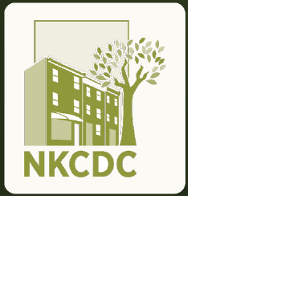

A narrow window
Tax prep had a defined audience, funding timeline, and season.

A broader plan to grow programs, partnerships, participation, and community reach
From a single tax prep campaign to a repeatable growth system across NKCDC's Economic Development work.
Phase One showed that NKCDC can generate attention and inquiries. It also exposed the limits of treating one time-bound campaign as the whole growth plan.
Tax prep had a defined audience, funding timeline, and season.
Fit, routing, and follow-up mattered more than raw lead counts.
NKCDC's Economic Development work creates many more reasons for people and partners to engage.
Phase Two turns NKCDC's full set of programs and community relationships into a coordinated growth system that attracts the right people, converts interest into participation, and builds lasting visibility.
Four connected capabilities turn strong community work into repeatable participation and measurable outcomes.
Give people a clear reason to engage.
Workshops, cohorts, clinics, incubators, and existing service lines
Put the right opportunities in front of the right audiences.
Ad Grants, social, outreach, partners, email, SMS, and webinars
Turn awareness into participation.
Landing pages, scheduling, lead routing, reminders, and referral tracking
Build compounding trust and reach.
Video, repurposed workshops, SEO, AEO, bilingual resources, and expert positioning
A focused menu to prioritize with NKCDC, not a promise to launch everything at once.
Pair each priority with only the channels, conversion path, and measurement needed to learn quickly.
Every priority follows the same accountable path. The offer changes; the operating system stays consistent.
A defined program and seasonal audience connect to promotion, a clear inquiry or booking path, consistent follow-up, and outcome reporting.
The same system can support a cohort or workshop, partner outreach, registration, reminders, attendance, and next-step tracking.
A program offer becomes a campaign with a defined audience, selected channels, a conversion path, nurture, and measurable progress.
A disciplined six-step loop keeps the offer, outreach, response experience, and evidence connected.
Clarify the offer, intended audience, owner, and desired next step.
Create the landing, registration, booking, or referral path.
Launch through only the selected outreach channels.
Assign every response, follow up, and send useful reminders.
Turn workshops and expert answers into reusable content.
Track participation, quality, downstream outcomes, and learning.
Each campaign leaves behind better audience knowledge, stronger content, clearer follow-up, and evidence for the next priority.
Program and business outcomes lead the scorecard. Channel activity helps explain why those outcomes moved.
Use leading indicators to diagnose the campaign. Use participation and downstream outcomes to decide what to continue, change, or scale.
Start with a small set of priorities, build the complete path, and scale only what the evidence supports.
Choose the first two or three Phase Two priorities and define the 90-day pilot together.